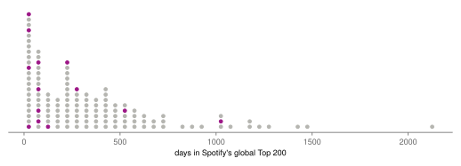
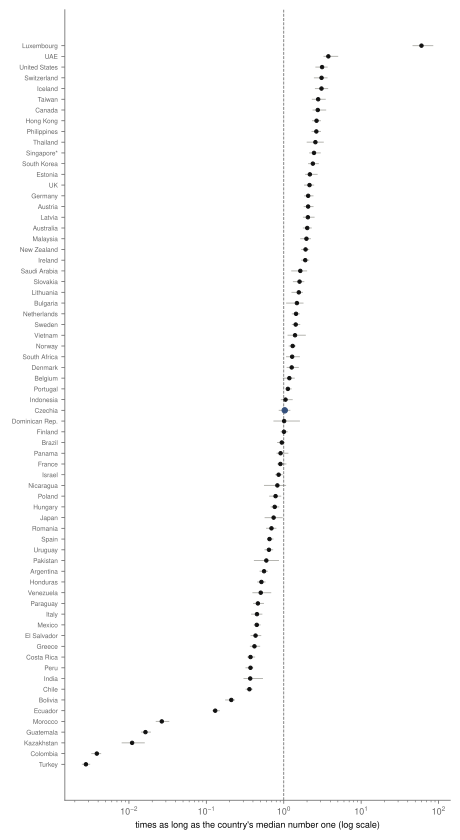
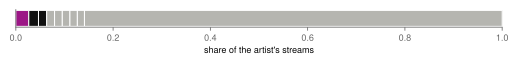
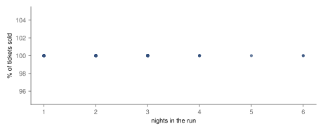
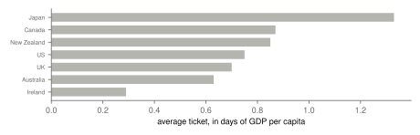
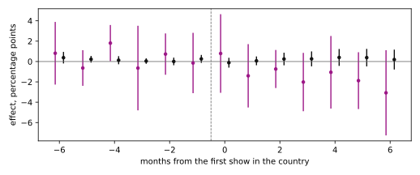

Research · Pop, measured, part 2 · Taylor Swift, 2017–2026
Taylor Swift, measured: a catalogue that sells out everything
Pre-specified: every one of her 85 Boxscore entries sold out; whether the Eras Tour raised national hotel prices, the price study's main question, is inconclusive (−3.02 to 4.59 points); restaurant and overall inflation in the countries it played did not move by more than about two thirds of a point.
- Boxscore entries that sold as many tickets as were available
- 100 % administrative count · 85 entries, 194 shows
- Gini coefficient of her Spotify streams by song
- 0.64 administrative count · 500 songs listed · with BTS (0.64) the highest of the series
- songs peaking at 2 that lasted longer than Cruel Summer
- 8.9 % 95 % CI 4.0 % to 14.5 % · 128 songs
- Eras Tour show month: accommodation inflation in host countries (primary)
- 0.79 pp 95 % CI −3.02 to 4.59 · inconclusive
- Eras Tour show month: restaurant inflation in host countries
- −0.12 pp 95 % CI −0.54 to 0.31 · not supported
Overwhelmed? Here's the short version
- Her biggest song never reached number one globally, yet it outlasted almost every song that peaked where it did; it returned to the chart years after its release, and the data do not say how much of its run that return supplied.
- No song holds more than a few percent of her streams, but across her 500-song page the streams are as unequal as for any artist in the series (Gini 0.64).
- Every show on her two stadium tours with figures sold out, so the data cannot say how much more she could have sold.
- Where the Eras Tour played in Europe in 2024, restaurant and overall inflation did not move by more than about two thirds of a point in the show month; whether hotel prices rose, the main question, cannot be told from national monthly indices.
- Her 2018 tickets cost under a day and a half of income in every country she played; the Eras Tour has no gross figures in the source.
- It rests on Spotify chart totals from kworb.net, Billboard Boxscore figures as cited on Wikipedia and Eurostat's national monthly price indices; city-level or weekly hotel prices could show what these cannot.
Photo: Redd Angelo · CC0, toned
This is the second part of Pop, measured, which asks five questions of five artists: how long the artist's biggest song lasted against comparable hits, where it lasted longest, whether the listening is one song or many, whether longer runs in one venue sold less of their tickets, and what a ticket cost in days of local income. The questions draw on work on the life of chart songs5, on the shift of musicians' income to live shows6, on concert pricing7 and on streaming's effect on music sales8. Taylor Swift's part adds a sixth, because her last tour became an economic story of its own: when the Eras Tour came to a country, did the prices of a hotel night or a meal out rise? That question has a causal design of its own, registered separately, and its answer closes this page.
Data
The chart data are the series' common collection, made once on 1 October 2026: for the global chart and 75 national Spotify charts, every song that has entered the Top 200 with its days, peak and total streams, and the artist's page with every song's streams1. By the series rule, the focal song is her song with the most global streams, Cruel Summer, released in 2019; its highest global position was number two, so its reference set is the 128 songs that also peaked at two and whose kworb track page has no date before 8 January 2017, not the number ones. That page can be incomplete: for Cruel Summer its earliest date is 31 August 2023, during its revival, not its 2019 entry, so the test that keeps a song in the set checks the earliest date kworb shows, not when the song first charted. The artist page lists 500 songs; she has more than that, counting re-recorded versions, so the page may stop short of her whole catalogue, which would slightly overstate the shares of her largest songs.
For the tours, the Wikipedia articles on the Reputation Stadium Tour (2018) and The Eras Tour (2023–2024) list Billboard's Boxscore figures, the trade reports of tickets sold, tickets available and gross for each run of shows2: 85 entries covering 194 shows. The Eras Tour's tables give tickets but no gross, so the price question rests on the 2018 tour alone. Income is the World Bank's GDP per capita in current dollars3. The price study uses Eurostat's monthly harmonised consumer price indices for 30 European countries, 29 of them in the estimation and Austria reported separately4, described in its own section.
How this was done
The chart and tour methods are those of the series, fixed on 1 October 2026, before this analysis was run; the author had worked with these data since March 2026. How long a song lasted is its total days in the global Top 200; songs still in the chart are treated as unfinished by the Kaplan–Meier estimator9, and a song's place is the share of songs in its reference set estimated to last longer, with a 95 % bootstrap interval from re-drawing the reference set 2 000 times. For countries, the focal song's days in each national chart are divided by the median days of that country's own number ones. Runs are compared with the share of tickets sold, under the rule set in advance that if nine entries in ten sold out, the data show demand at or above capacity and nothing more. Ticket prices are gross divided by tickets sold, then divided by a day of the host country's GDP per capita. These results are descriptive. The price study's method is set out with its results.
How long Cruel Summer lasted
Cruel Summer spent 1 026 days in the global Top 200, more than any other song in its reference set but a handful: only 8.9 % of songs that also peaked at number two are estimated to have lasted longer (95 % CI 4.0 % to 14.5 %). The median such song lasted 258 days. Its story explains part of that. It came out on an album in 2019 without being a single, and returned four years later, when she put it into the Eras Tour and released it to radio; the collected data do not say how its days split between the first run and the second. The measure counts days in the chart, not days in a row, which is exactly what a revival adds. Her other songs that peaked at two behaved more like their peers: Lover lasted 518 days, and most of the rest, album tracks and re-recordings that entered high for one release week, were gone within months.
The rest of the reference set is a reminder of how a big release week shows up. Re-recorded songs from her "Taylor's Version" albums and tracks from new albums entered the global chart near the top on the strength of release day, then left within a few weeks: Back To December (Taylor's Version) lasted 21 days, The Tortured Poets Department 42. A peak of two says how many people played a song in its first days; how long it stays says whether they went on playing it. For Cruel Summer, they did, more than for almost any comparable song.

Where it lasted
Cruel Summer entered 68 national charts and outlasted the local median number one in 37 of them. Luxembourg tops the registered ranking, by days against the local median number one, at 60×, because its number ones last a median of 7 days, so any long run looks huge. After it, the song stood out most in the United Arab Emirates (3.8×), the United States (3.1×), Switzerland (3.1×), Iceland (3.1×), Taiwan (2.8×) and Canada (2.8×). Its home market and the English-speaking world kept it long: 902 days in the United States, 891 in the United Kingdom. Ranked by days alone, a ranking added to the series after part 1's results were seen, it lasted longest in Singapore, 1 517 days and still in the chart, and in the Philippines (1 369), the United Arab Emirates (1 244) and Hong Kong (1 236).
In Czechia it spent 444 days against 431 for the median Czech number one: 1.0 times as long (95 % CI 0.9–1.2), 35th of 68 countries, almost exactly the world's middle, as for Harry Styles in part 1. Slovakia kept it 1.6 times as long as its median number one, Poland 0.8 times. In Mexico (0.4×) and Japan (0.7×) it lasted less than local number ones, and in Colombia and Turkey it barely entered the chart at all, for a day or two.

Cruel Summer outlasted the local median number one in 37 of 68 countries; in Czechia it ran level, 1.0×.

One song or a catalogue
Of the 500 songs on her Spotify page, the largest, Cruel Summer, holds 3 % of their streams; Blank Space and I Don’t Wanna Live Forever (Fifty Shades Darker), a duet from a film soundtrack, follow, and the top three together hold 6 %. Only 13 songs hold one percent or more each. The registered summary measure of concentration is the Gini coefficient, 0 if every song had the same streams and 1 if one song had them all; hers is 0.64, with BTS (0.64) the highest of the series, against 0.56 for Harry Styles, 0.54 for Bad Bunny and 0.52 for Billie Eilish. Her top song's share is not the smallest either: Bad Bunny's is 2 %. So no single hit dominates, but across the whole page the streams are unequal, in part because a 500-song page includes many rarely played tracks. By a count that is not one of the registered measures, half of all her streams come from 57 songs, the largest number in the series (six for Harry Styles, 41 for BTS, 46 for Bad Bunny, 14 for Billie Eilish); that count grows with the size of the page, which lists 500 songs for her against 49 to 319 for the others, and re-recorded versions count as separate songs, so it is not evidence that her listening is more spread.
No single song dominates: Cruel Summer, her biggest, holds 3 % of the streams on a 500-song page.

How many nights a city can fill
Her two tours with figures, Reputation Stadium Tour and The Eras Tour, played 194 shows in 85 Boxscore entries, all in stadiums. Every entry reports exactly as many tickets sold as available. The longest runs were 6 nights, at SoFi Stadium in Inglewood and Singapore National Stadium in Singapore. Because the share sold is the same everywhere, its correlation with the length of the run is undefined: there is nothing for it to measure. By the rule set in advance, the data show demand at or above capacity everywhere and cannot say how far above; for the Eras Tour, reports of millions of fans failing to get tickets suggest far above, but those reports are not data of this study. The median Reputation Stadium Tour entry, of the 36 with a gross, took 6.67 million dollars a night; the Eras Tour has no gross in the source.
Every one of her 85 entries sold as many tickets as were available.

What a ticket cost, in days of income
With gross figures only for the Reputation Stadium Tour, the price question covers 7 countries in 2018. The average ticket cost 1.3 days of the local GDP per capita in Japan (148 dollars), and less than a day everywhere else: 0.9 in Canada, 0.7 in the United States (129 dollars), 0.29 in Ireland (64 dollars). The average across the tour was 120 dollars a ticket. All the countries were rich, and none of them in Latin America or South-East Asia, where the other parts of the series found tickets costing several days of income; that is a fact about where this tour went, not about her pricing. The Eras Tour, which did play Latin America and South-East Asia, would be the test, and its gross is not in the source.

Did the Eras Tour raise prices?
Stadium tours are often said to push up local hotel prices, and the Eras Tour in 2024 prompted the question across Europe. This part answers it, for national prices, with a pre-specified design. The registered main question is accommodation in the month of the first show; the plan records that the author expected those prices to rise. The tour's first European show in each country fell in a different month: May 2024 in France, Sweden, Portugal and Spain, June in Ireland, July in the Netherlands, Switzerland, Italy and Germany, August in Poland. That staggering lets the 10 host countries be compared, month by month, with the countries the tour had not yet reached and the ones it never played: a difference-in-differences, the change in host countries minus the change in the others over the same months, using Callaway and Sant'Anna's estimator for staggered timing10. Time is counted from each country's first show: month 0 is the show month, month −4 four months before. The outcome is year-on-year inflation in Eurostat's harmonised price index4 for accommodation services, for restaurants and cafés, and for the whole basket, in 29 countries. The United Kingdom has no harmonised index after 2020, and Austria, whose three Vienna shows were cancelled the day before the first, is reported separately. The design, the outcomes and the labels were committed on 2 October 2026, before this analysis was run; the author had worked with these data since March 2026.
In the month of the first show, year-on-year inflation in restaurants and cafés changed by −0.12 percentage points (95 % CI −0.54 to 0.31; permutation p = 0.54, the share of 2 000 random reassignments of the show months to countries that gave an effect at least this large), and in the whole basket by 0.23 points (−0.21 to 0.67; p = 0.17). Both intervals lie within one percentage point of zero, so by the rule fixed in advance both are not supported: rises larger than about 0.31 points in restaurant inflation and 0.67 points in overall inflation are ruled out, but smaller effects are not, and a few tenths of a point on a national index would not be small. For accommodation, the main question, the estimate is 0.79 points, with an interval from −3.02 to 4.59 and p = 0.56: inconclusive. The author's expectation of a rise is neither confirmed nor refuted: the interval allows a sizeable fall or a sizeable rise. National hotel prices move several points from month to month for reasons of their own, and one weekend of shows in one city is too small a part of a country's hotel nights to stand out from that. One of the months before the shows, month −4, has a band that excludes zero, a further reason the label is not stronger. In the months after the show the accommodation estimates are negative, −1.41 and −0.74 points in months +1 and +2 (bands −4.46 to 1.65 and −2.55 to 1.08), and negative in 6 of the 6 months through month +6, all with bands that include zero: nothing points to a lasting rise.
Hotel inflation in the show month: +0.79 points, band −3.0 to +4.6, inconclusive; restaurant inflation did not move by more than about two thirds of a point.

The checks agree. Comparing with never-visited countries only gives 0.91 points for accommodation. Leaving out each host country in turn keeps the accommodation estimate between −0.39 and 1.55. A placebo that puts every show twelve months earlier, in 2023, gives 0.32 (−2.28 to 2.92). Austria's accommodation inflation in August 2024, the month of the cancelled shows, was 5.4 %, higher than in 63 % of the comparison countries: nothing unusual. Germany's show month coincided with the European football championship, which it hosted, and dropping Germany does not change the picture. What this does not say is what happened in Lisbon, Madrid or Warsaw on the weekend of the shows: a city's hotels can be full and dear for three nights without moving a national monthly index. At the level of national monthly prices, restaurant and overall inflation show no effect above about two thirds of a point; whether hotel prices rose cannot be told from these data.
What this means
Measured: Taylor Swift's biggest song never topped the global chart and still outlasted all but 8.9 % of the songs that peaked where it did, with a revival four years after its release counted in its run. No single song dominates her streams, but across her 500-song page they are as unequal as for any artist in the series (Gini 0.64). Every show on her two stadium tours with figures sold out, so the limit of her demand is not in these data. Her 2018 tickets cost less than a day and a half of income in every country she played. And in the European countries the Eras Tour played in 2024, national inflation in restaurants and in the whole basket did not rise in the show month by more than about two thirds of a point; whether hotel prices rose, the main question, is inconclusive at the level of whole countries. A stadium tour is enormous for a city for a weekend and small for a country for a month.
What this does not show
Spotify is one service among several. Days in the chart are not days in a row, and her focal song's revival is counted as part of its run. The artist page may not list her whole catalogue. A sold-out show hides how many more wanted tickets, and the Eras Tour's gross is not in the source, so its prices are not measured here. The price study is national and monthly: it cannot see a city's prices over a weekend, prices that tourists paid as distinct from residents, or prices in the United Kingdom. It covers one tour in one summer, alongside a football championship in one host country. GDP per capita is a rough stand-in for what fans earn.
Reproduction
Every number on this page is filled in from assets/pop/taylor-swift/results.json and eras-results.json by a script. From the repository root: tools/pop/collect.py and collect_extra.py collect the chart and tour files, and tools/eras/collect.py the price indices; parse.py, analyse.py and tools/eras/estimate.py make the estimates; figures.py, tools/eras/figures.py and article.py taylor-swift build the figures and this page. The designs are pop-measured-design.md and eras-inflation-design.md.
References
- kworb.net (2026). Spotify charts: daily totals for the global and national charts, current daily charts, track pages and artist song lists. kworb.net/spotify. Accessed 1 October 2026.
- Wikipedia contributors (2026). Reputation Stadium Tour, revision 1376322065; The Eras Tour, revision 1376835990; Boxscore figures as cited there. en.wikipedia.org. Accessed 1 October 2026.
- World Bank (2026). GDP per capita, current US$ (NY.GDP.PCAP.CD), 2016–2025. data.worldbank.org. Accessed 1 October 2026.
- Eurostat (2026). HICP, monthly data (index, 2015 = 100),
prc_hicp_midx: CP112 accommodation services, CP111 restaurants and cafés, CP00 all items, January 2022 to December 2025. ec.europa.eu/eurostat. Accessed 2 October 2026. - Bradlow, E. T., Fader, P. S. (2001). A Bayesian lifetime model for the "Hot 100" Billboard songs. Journal of the American Statistical Association 96(454), 368–381. doi:10.1198/016214501753168091. Accessed 2 October 2026.
- Connolly, M., Krueger, A. B. (2006). Rockonomics: the economics of popular music. In Handbook of the Economics of Art and Culture, vol. 1, 667–719. Elsevier. doi:10.1016/S1574-0676(06)01020-9. Accessed 2 October 2026.
- Courty, P., Pagliero, M. (2014). The pricing of art and the art of pricing: pricing styles in the concert industry. In Handbook of the Economics of Art and Culture, vol. 2, 299–356. Elsevier. doi:10.1016/B978-0-444-53776-8.00013-1. Accessed 2 October 2026.
- Aguiar, L., Waldfogel, J. (2018). As streaming reaches flood stage, does it stimulate or depress music sales? International Journal of Industrial Organization 57, 278–307. doi:10.1016/j.ijindorg.2017.06.004. Accessed 2 October 2026.
- Kaplan, E. L., Meier, P. (1958). Nonparametric estimation from incomplete observations. Journal of the American Statistical Association 53(282), 457–481. doi:10.1080/01621459.1958.10501452. Accessed 2 October 2026.
- Callaway, B., Sant'Anna, P. H. C. (2021). Difference-in-differences with multiple time periods. Journal of Econometrics 225(2), 200–230. doi:10.1016/j.jeconom.2020.12.001. Software: csdid for Python. Accessed 2 October 2026.